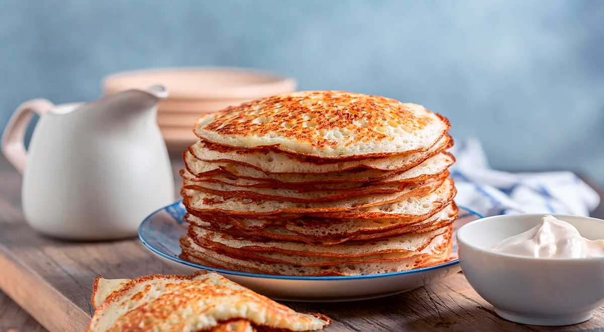

Лучшие рецепты толстых блинов из муки: готовим идеально вкусные

Толстые мягкие блины, только что снятые со сковороды и сдобренные
сметаной или сливочным маслом... для многих из нас это настоящее
искушение, не поддаться которому просто невозможно! Существует
множество разновидностей толстых блинов: дрожжевые и на соде, на
пшеничной муке и с добавлением альтернативной, на молоке и на
кефире. В нашей подборке собрано 10 неоднократно проверенных и
несложных в приготовлении рецептов.